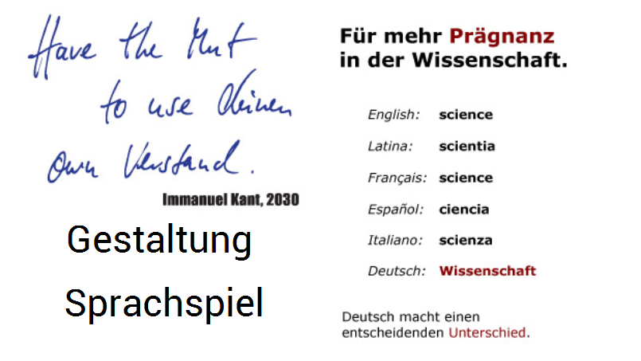

返回主页
科技德语更精确

虚拟康德名言：“Have the Mut (courage) to use deinen (head) own Verstand (Mind/wit)”（鼓起勇气，去运用你自己的理性。注意英语和德语的混合使用）
康德的《纯粹理性批判》（Kant：Kritik der reinen Vernunft）中译本很一般。蓝公武译本文言晦涩、牟宗三译本牵强附会、韦卓民译本功力有限、李秋零（在德国留学但没拿到学位）与邓晓芒（知青高考前80天突击德语）。
在wiki里面，没有Gestaltung的英语解释。而语言、造型（Gestaltung）和音乐是人类认识世界的三种基本方式。德语更加精确。
德语学习，可以从数数开始。然后是儿歌，发音和语法都很简单。
用德语在互联网上冲浪
德语弹舌音（颤音）
德语儿歌
version:1.0; jobnet@188.com © retter2012.com